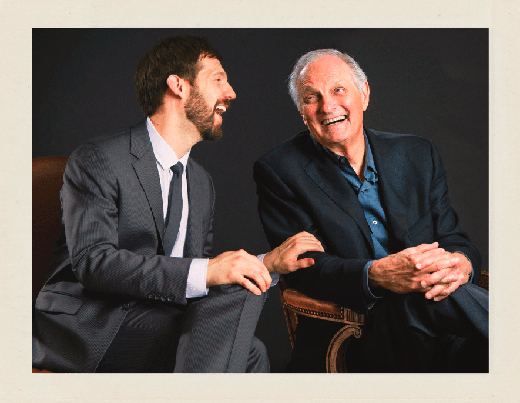
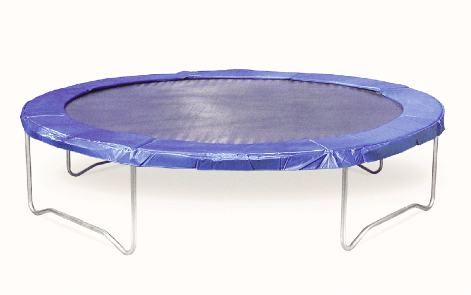

Fig. 1: exactly what it says on the tin.
The cover of Not A Trampoline is a pristinely presented piece of chicken. Right off the bat, it warns you: don't take this album too seriously, no matter how formally it presents itself. You've all seen Actual Cannibal Shia LaBoeuf.
And then the album begins.
Not A Trampoline makes me laugh, at moments I don't think it's trying to, and makes me feel emotions at moments I think it's not particularly trying to, either. Rob Cantor has such an unpredictable sense of humor that I can't always tell if I'm laughing with him or laughing at him.
Does it matter? Of course not, death of the author and all, but it intrigues me. Do I like a song for what it is, or what it's trying to be?
Without further ado: every song from Not A Trampoline, rated according to its apparent sincerity (versus how seriously I can actually take it).
Provided someone is experiencing this as a traditional album (who does, nowadays?) the first thing they will encounter is the frankly absurd title, the even absurd-er cover, and then... this song. It's a surprisingly sad, sincere place to open. The tone never strays from a deep loneliness, lyrically or sonically. Even when the song breaks down into chaos and becomes briefly Dan Deacon-esque near the end, it doesn't feel in mockery of the emotion of the song, but like a culmination of it.
And then there's Old Bike. Goddangit, Old Bike. Now, I have nothing against silly songs. Or emotional songs. Or songs which are both. But I had my own bike which I dearly loved past its prime (my brand-new true-blue Sports Cruiser 7) and I really, really love the emotion in the opening of this song. That just made the moment where it descends (ascends?) into over-the-top parody feel like a betrayal.
The key change, the massive amounts of reverb, the overdriven autotune, the female vocalist who operatically belts "oh YEAH, it's the END of the sooooong", it all cheapens the beginning for me. I have to hold it at an emotional arm's length to avoid disappointment, and that's just too bad.
Fig. 2: a pretty new-looking bike, by my estimation.
A beautiful song whose emotional content I appreciate at face value. The bridge in particular is transcendent. Still, small touches indicate that the song is having fun, not taking itself too seriously (the extremely 80s drum fills and danceability, mildly goofy lyrics like "I'm a Frankenstein, say 'it's alive!'"). A good balance.
In order to give an accurate, considered opinion on the sincerity of this song, I think I'd have to watch the music video, and I refuse to do that. (The video is NSFW.) Cool song though.
It muddies the intent of any song when it passes through multiple hands in its writing, but I feel there's something about I'm Gonna Win that makes it recognizably Rob's by now. The introspection and sorry-for-yourself reality-pondering of All Of My Friends is gone, replaced by pure, bombastic, musical theater villain-song energy. Most (all?) Not A Trampoline songs are character songs in a way, but none more obviously than this one.
It's a song for shedding yourself and becoming something else: the persona is ridiculous and the life story pure fabrication, but the energy, that belongs to anyone who wants to wholeheartedly sing along.
As far as I can tell, this song is intended to be taken seriously. Nothing in the buildup indicates self-awareness of how close it is to being over the top. Is it over the top? Very much so, to my personal tastes. But it seems to truly mean every word. The man's voice cracks with emotion! I've never heard him do that in any other song. I'm almost positive this is meant to be taken seriously, but I can't know for sure, and it vexes me.
Fig. 3: Rob's original plan for the cover photo was a single flamingo feather, but he found it too serious and symbolic for his liking. It was Bora Karaca who suggested the iconic chicken nugget.
Like I'm Gonna Win, I don't feel like this exists for emotional expression or artistic merit, but just because it's extremely fun to sing. The lyrics are few, lovely, and absurd (the Spanish ones verge on nonsense) and Rob once described the shouting sing-along ending as "muppets". The silliness adds to the lyrics' manic-yet-extremely-chill good mood. Reminds me of the loopy camaraderie of finishing a group effort well done at an extremely late hour, hitting the point where everything is extremely funny for no reason.
Another over-the-top relationship drama, but this one seems to understand exactly how silly it is. The song is called "the soap opera", after all. I think I took the this one a little more seriously than it was intended before noticing it's about a couple giving each other the silent treatment.
There's also some sections in here where a second voice whispers the main vocals, an effect Rob pulls out for dual drama/comedy (Flamingo, Actual Cannibal).
Okay, I shouldn't say "obviously". A bit of prerequisite knowledge is required here: you have to know that Alan Alda is not dead (or, er, wasn't dead at the time of his writing this song. Or of my writing this article, but he's 85 now, so I'm hedging my bets.)
It also doesn't hurt to know:
Still, the song itself only cracks the slightest smile. This is one of those tricky ones that set me on this question of "sincerity", because without knowing these things beforehand, I don't think I would have picked up on this as farce.
Fig. 4. Deception and trickery.
Whenever Rob breaks out the acoustic guitar, he's probably being too sincere for his own good. (Not sure if I'm including Be Born in that blanket statement or not.) Just some interpersonal advice that, while I'm tempted to brush it off as extrovert nonsense, is probably good advice for anyone with a decent relationship with their parents.
Like I'm Gonna Win, this song's intent feels muddied by the fact that the music and lyrics passed through multiple hands. I can't prove that any one line was written by Rob vs Andrew (though I have some guesses at which parts of the backing track came from whom). Still, the vague irony in this song feels less like Rob's trademark formal-yet-absurd than it does Andrew's trademark sweet-yet-unsettling.
You're perfect, it insists repeatedly, while avoiding mentioning any positive traits. You're perfect. Everyone knows it. You're infalliable; don't worry about it. You could take everything from me and you'd deserve it. The synths edge on detuned and the chord progressions teeter on instability and in my opinion the song is, like its subject, perfect.
And we end the album on a similar note as we began: crushing loneliness. Jeez, Rob. I guess you really didn't want this to be mistaken for a straight comedy album. I don't often allow slow or sad songs to get to me, but sometimes this one does.
...what, really? Numerically, by these ratings, we get about a 3.5/5 average, which is to say slightly more serious than not.
But imagine a world where the numbers would take some time out. It's not like "sincerity" is actually something you can actually meaningfully represent in numbers. (Quick, rate this PNG of a chicken nugget on a sincerity scale of 0-5, there's only one right answer.) I'm a fool on a fool's errand and I know it. This is, at best, pure speculation about authorial intent. The numbers are just a helpful psychological trick to make me think I've found an "answer" before my mind runs these questions into the ground. The only way to know for sure would be to ask Rob himself, which I have no intention of doing. That would only take the fun out of speculation.
If I ever do meet Rob Cantor, I'll just ask him to sign my copy of Not a Trampoline. It will be interesting to see if he thinks I'm being sincere or not.
Fig. 5. Ceci n'est pas un trampoline.